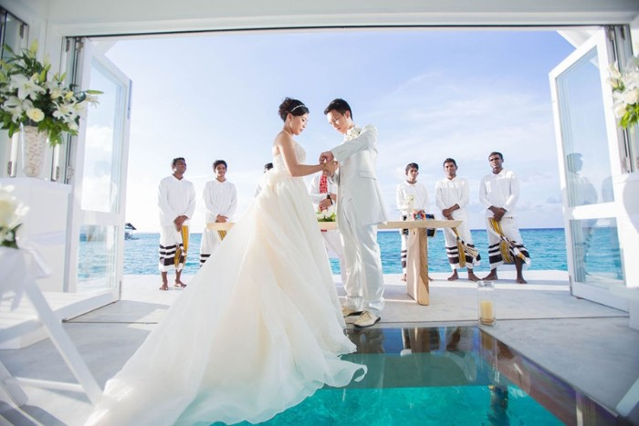

公開入門價
需另行詢價
Four Seasons Hotels and Resorts
Four Seasons Resort Maldives at Landaa Giraavaru
位於 Baa Atoll UNESCO 生物圈保護區，主打水上 Wedding Pavilion、Blu Beach 白沙灘與私人島植栽儀式區。

直接看真實分享、旅客照片與平台頁面，比對儀式感、雨備、晚宴空間和賓客動線；點照片可放大查看。
為了更貼近實際判斷，這裡預設隱藏了 1 筆官方飯店圖集。
點擊照片可放大，左右切換瀏覽全部。
先判斷這間場地有沒有 shortlist 資格，再決定要不要投入時間深查細節與照片。
公開入門價
需另行詢價
容量輪廓
儀式 2-80 人 | 晚宴 2-80 人
雨備結論
雨備可用｜官方場地頁另列 Library 等小型室內空間；大型戶外儀式仍需向飯店確認雨天替代方案。
交通／住宿
MLE 接駁約 35 分鐘 | 接駁風險 中｜住宿整合度高
第一個要追問的點
確認 Wedding Pavilion、Blu Beach 與 jungle clearing 的實際儀式/晚宴容量。
照片參考深度：照片量偏少
把結構條件攤平看，確認它能不能真的支撐你們想要的婚禮形式。
適合願意接受水上飛機接駁的小型至中型海外賓客；長輩需評估碼頭與船機轉乘。
把容量、價格、雨備、交通與住宿一次看完，先判斷有沒有 shortlist 資格。
容量
儀式 2-80 人 | 晚宴 2-80 人
價格摘要
需另行詢價，目前沒有可直接換算的公開價格。
公開價格已統一換算為台幣，匯率基準為 2026/06/18：1 USD = NT$31.655、1 IDR = NT$0.001775。
天候與雨備
官方場地頁另列 Library 等小型室內空間；大型戶外儀式仍需向飯店確認雨天替代方案。
小型儀式與晚餐的雨備可行性較高；水上亭與沙灘儀式受天候影響明顯。 水上亭、白沙灘與私人島植栽儀式區都是戶外場景，需避開強風與西南季風降雨風險。
交通與住宿
從 Velana International Airport 通常以水上飛機接駁，約 35 分鐘飛行；夜間與天候限制需另行確認。
一島一度假村，賓客住宿、餐飲與活動集中在島上。 跨島住宿不適合作為主要婚禮動線，除非另行安排船班與多島行程。
適合對象
關鍵優勢
關鍵風險
待確認問題
同一間飯店內常常同時有公開型、私密型與包場型玩法；這裡先把真正影響決策的空間拆開看。
最有馬爾地夫辨識度，適合把儀式畫面放在第一順位。
適合想把沙灘、落日與長桌晚宴放在主畫面的新人。
先用公開可見的方案底價做比較；下表主欄位已換算台幣，原始幣別保留在同列方便對照。
公開價格已統一換算為台幣，匯率基準為 2026/06/18：1 USD = NT$31.655、1 IDR = NT$0.001775。
這些條件往往比想像中更影響預算、外部廠商選擇和賓客動線。
音量／宵禁
戶外晚宴音量、結束時間與島上住客動線需向飯店確認。
外部廠商政策
外部婚禮團隊、攝影、佈置與妝髮進島政策需逐案確認。
住宿／低消門檻
婚禮與節慶旺季可能有最低住宿晚數，需以報價為準。 未公開最低消費，需由婚禮團隊報價。
空拍／親子／使用限制
度假村、民航與隱私規範通常限制空拍，需事前核准。
適合家庭賓客，但水上動線與海邊活動需留意兒童安全。 馬爾地夫多為象徵式婚禮或 vow renewal，法律登記需另行安排。 水上飛機時段、天候與島上營運排程會影響婚禮時間。
這區是給需要核對價格、限制或照片出處時使用，預設折疊，不干擾主要瀏覽。
官方描述 Landaa Giraavaru 婚禮可選 overwater Wedding Pavilion、Blu Beach 白沙灘與 private jungle clearing，並由婚禮團隊協助規劃。
官方場地頁用於確認水上亭、白沙灘、島嶼綠意與小型室內空間的場景組合。
用於確認 Baa Atoll 水上飛機接駁邏輯與賓客抵達限制。
頁面展示 Landaa Giraavaru 水上儀式空間、玻璃走道、海景儀式與多組前輩新人報告連結。
文章描述 Landaa Giraavaru 的 over-water wedding pavilion 距岸約 50 公尺、需搭船抵達，並提到最多約 16 位賓客的私密儀式設定。
如果這間有進 shortlist，這些是目前資料庫裡條件最接近的備選。
Soneva Fushi
Baa Atoll / 21-50
需另行詢價，目前沒有可直接換算的公開價格。
Four Seasons Resort Maldives at Kuda Huraa
North Male Atoll / 21-50
需另行詢價，目前沒有可直接換算的公開價格。
One&Only Reethi Rah
North Male Atoll / 21-50
需另行詢價，目前沒有可直接換算的公開價格。
需要核對路線、地址或官方房量資訊時，再從這裡開外部頁面。